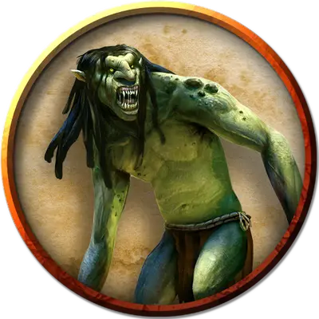

Пятирукий тролль
Five-Armed Troll
Большой Великан, хаотично-злой

Класс Доспеха 15 (природный доспех)
Хиты 84 (8к10 + 40)
Скорость 30 футов
| мод | спас | ||
|---|---|---|---|
| СИЛ | 18 | +4 | +4 |
| ЛОВ | 13 | +1 | +1 |
| ТЕЛ | 20 | +5 | +5 |
| мод | спас | ||
|---|---|---|---|
| ИНТ | 7 | −2 | −2 |
| МДР | 9 | −1 | −1 |
| ХАР | 7 | −2 | −2 |
Навыки Восприятие +2
Чувства тёмное зрение 60 футов, пассивное Восприятие 12
Языки Великаний
Опасность 8 (3900 опыта)
Бонус мастерства +3
Особенности
Тонкий нюх. Тролль совершает с преимуществом проверки Мудрости (Восприятие), полагающиеся на обоняние.
Регенерация. Тролль восстанавливает 10 хитов в начале своего хода. Если тролль получает урон кислотой или огнём, эта особенность не действует в начале его следующего хода. Тролль умирает только если начинает ход с 0 хитов и не может регенерировать.
Отвратительные конечности. У некоторых троллей есть следующая особенность:
Отвратительные конечности. Если тролль получает за раз как минимум 15 рубящего урона, бросьте к20, чтобы определить дополнительный эффект:
• 1–10: Ничего не происходит.
• 11–14: У тролля отрублена одна нога, если у него оставалась хотя бы одна.
• 15–18: У тролля отрублена одна рука, если у него оставалась хотя бы одна.
• 19–20: Тролль обезглавлен, но умирает только если не может регенерировать. Если он умирает, то умирает и голова.
Если тролль совершает короткий или продолжительный отдых, не прикрепляя к себе отрубленную конечность или голову, то на её месте отрастает новая. Отрубленная при этом умирает. До тех пор отрубленная часть тролля действует с такой же инициативой как у тролля, и у неё есть собственное действие и собственное перемещение. У отрубленной части КД 13, 10 хитов и особенность Регенерация как у тролля.
Отрубленная нога не может атаковать, и у неё скорость 5 футов
У отрубленной руки скорость 5 футов, и она может совершить одну атаку когтями в свой ход, причем с помехой, если только тролль не видит и эту руку и её цель. При потере троллем руки он также теряет одну атаку когтями.
Если отрублена голова, тролль теряет атаку укусом и его туловище считается ослепленным, если только голова не видит его. У отрубленной головы скорость 0 футов и особенность тролля Тонкий нюх. Она может совершить атаку укусом, но только если цель находится в её клетке.
Если тролль потерял ногу, его скорость снижается вдвое. Если обе ноги — он падает ничком. Если при этом у него есть руки, он может ползти. Если рука при этом осталась только одна, он по-прежнему может ползти, но скорость уменьшается вдвое. Без рук и без ног его скорость становится равной 0, и тролль не получает никаких бонусов к скорости.
Действия
Мультиатака. Тролль совершает шесть атак: одну укусом, и пять когтями.
Укус. Рукопашная атака оружием: +7 к попаданию, досягаемость 5 футов, одна цель. Попадание: Колющий урон 7 (1к6 + 4).
Коготь. Рукопашная атака оружием: +7 к попаданию, досягаемость 5 футов, одна цель. Попадание: Рубящий урон 11 (2к6 + 4).
Описание
У мутировавшего тролля из груди растёт дополнительная пара рук, а также из спины торчит ещё и пятая рука. Тролль преуспевает во всех спасбросках против вони троглодитов.
У него 44 хита на момент прибытия персонажей. Пока он ранен, тролль имеет уровень опасности 6 (2,300 опыта). Если он восстанавливает полностью свои очки здоровья, его уровень опасности возрастает до 8 (3,900 опыта).